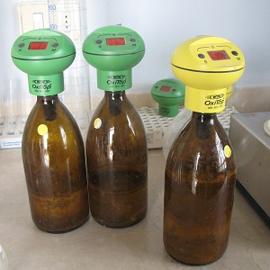
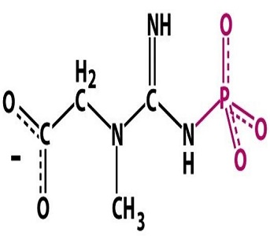

Calculations in Context
Radius of Jupiter
 Researchers measured the equatorial radius of Jupiter 40 different times. The method used is largely without bias but there is measurement-to-measurement variability. In fact, σ is assumed to be 28 km. The mean of the 40 measurements was 71492 km. From this, construct and interpret a confidence interval assuming that α=0.01.
Researchers measured the equatorial radius of Jupiter 40 different times. The method used is largely without bias but there is measurement-to-measurement variability. In fact, σ is assumed to be 28 km. The mean of the 40 measurements was 71492 km. From this, construct and interpret a confidence interval assuming that α=0.01.
BOD in Effluent
 The managers of a wastewater treatment plant monitored the amount of biological oxygen demand (BOD; lbs/day) in the effluent of the plant each month from January 1991 to October 2000. The managers would need to take corrective actions if the average BOD over this time period was significantly greater than 2200 lbs/day at a 10% rejection level. Previous studies indicated that the standard deviation was 1200 lbs/day. Summary statistics from their sample of days is given below. From this construct a proper confidence region.
n Min. 1st Qu. Median Mean 3rd Qu. Max.
118 630 1600 2240 2504 3193 6023Medical School Admissions
Admissions representatives at the University of Minnesota medical school were concerned that the average grade point average of applicants in non-science courses had dropped below 3.7. A sample of 40 of the most recent applicants indicated that the mean was 3.60. Information from the Association of American Medical Colleges suggested that the overall standard deviation was 0.35. From this construct a proper confidence region for the mean grade point average assuming that α=0.05.
Banff Snow Depth
Hebblewhite et al. (2000) reported the mean snow pack height (in cm) for Banff (data are below). Their results are shown in Table 1. Use these results to compute a 99% confidence interval for the mean snow pack height assuming that σ=15 cm.
Table 1: Summary statistics for the depth of snow in Banff.
n mean sd min Q1 median Q3 max
15.00 44.61 15.15 29.00 32.76 45.51 46.46 80.39 Creatine Phosphate Concentrations
 The concentrations (International Units per liter) of creatine phosphokinase (an enzyme related to muscle and brain functions) in 36 male volunteers was recorded and the results are in Table 2. Construct a proper confidence region for the population mean creatine phosphokinase assuming that the HA is a “greater than”, α=0.05, and σ=40.
Table 2: Summary statistics for the creatine phosphate concentrations in 36 male volunteers.
n mean sd min Q1 median Q3 max
36.00 98.28 40.38 25.00 67.75 94.50 118.25 203.00 Brule River Gage Heights
The maximum gage heights (feet) of the Bois Brule River in Brule, WI from 10-25Feb05 were recorded and summarized in Table 3. Use these results to construct a proper confidence region for the population mean gage height assuming that the HA is a “not equals”, α=0.05, and σ=0.20.
Table 3: Summary statistics for the gage height on the Brule River.
n mean sd min Q1 median Q3 max
16.00 1.73 0.20 1.53 1.57 1.65 1.89 2.11 Population Density in Wisconsin Counties
The population density (number of people per acre of land) for 15 randomly selected Wisconsin counties was recorded and is summarized in Table 4. Construct a proper confidence region for the population mean density assuming that the HA is a “less than”, α=0.10, and σ=125.
Table 4: Summary statistics for the population density of Wisconsin Counties.
n mean sd min Q1 median Q3 max
15.00 92.86 126.36 10.20 23.90 52.10 82.60 429.00


 Suppose that a plant ecologist is to examine a very large tract of land that has been subdivided into 1400 plots of 10 m2 (10 square meters). The researcher wants to determine, with 90% confidence, the mean density of plants per plot for the entire tract of land to within 10 plants per plot. A pilot study indicated that the standard deviation was approximately 50 plants per plot. Determine how many 10 m2 plots the researcher should examine to reach her stated goals.
Suppose that a plant ecologist is to examine a very large tract of land that has been subdivided into 1400 plots of 10 m2 (10 square meters). The researcher wants to determine, with 90% confidence, the mean density of plants per plot for the entire tract of land to within 10 plants per plot. A pilot study indicated that the standard deviation was approximately 50 plants per plot. Determine how many 10 m2 plots the researcher should examine to reach her stated goals.